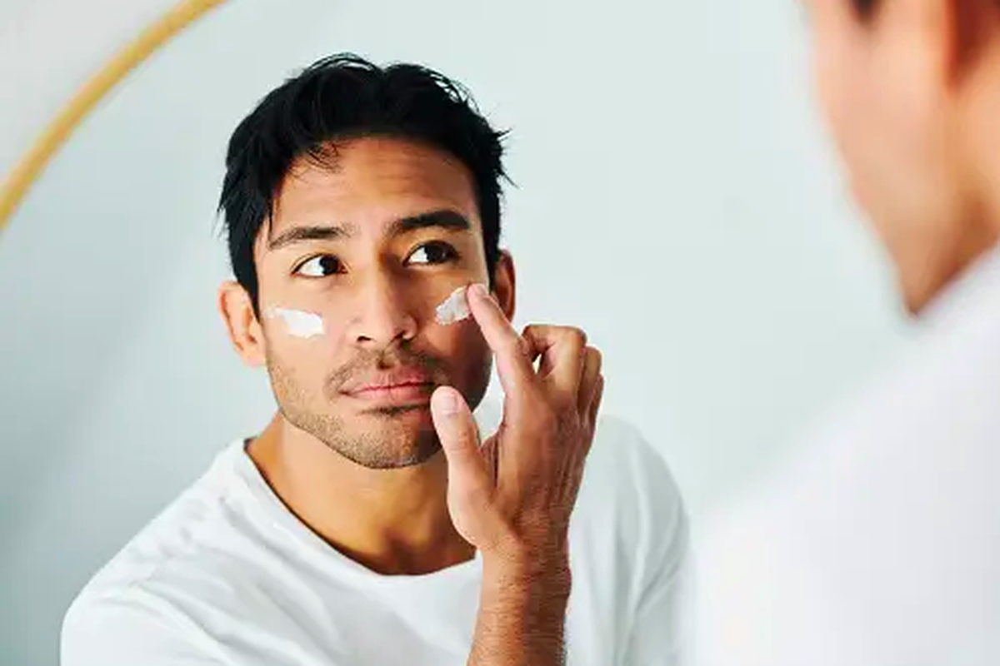
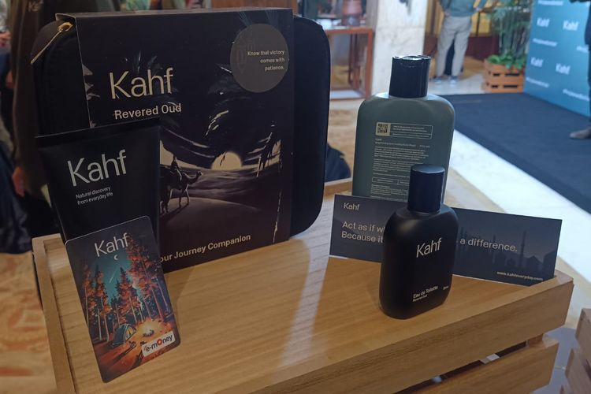

Profil Kahf
PT Paragon Technology And Innovation (PTI) adalah salah satu perusahaan kosmetik dan perawatan terbesar di Indonesia, dikenal luas karena inovasi dan komitmennya pada nilai-nilai Islami. Sebagai bagian dari diversifikasi portofolio produknya, PTI menghadirkan Kahf, merek perawatan pria yang dirancang untuk memenuhi kebutuhan gaya hidup modern dengan tetap memegang prinsip halal.
Sejarah Kahf
Kahf lahir sebagai bagian dari upaya diversifikasi merek oleh PT Paragon Technology and Innovation (PTI), sebuah perusahaan kosmetik terkemuka di Indonesia. Sebagai perusahaan yang telah dikenal luas melalui merek seperti Wardah, PTI menyadari pentingnya menghadirkan produk perawatan yang ditujukan khusus untuk pria. Terinspirasi oleh filosofi kehidupan yang seimbang antara tubuh, pikiran, dan lingkungan, Kahf diluncurkan pada tahun 2020 dengan misi menghadirkan solusi perawatan pria yang modern praktis dan halal.
Nama "Kahf" memiliki makna mendalam yang diambil dari Surat Al-Kahf, salah satu surat dalam Al-Qur'an. Surat ini melambangkan perlindungan, kekuatan, dan keseimbangan, yang menjadi nilai inti dalam pengembangan produk Kahf. Filosofi tersebut diterjemahkan ke dalam konsep produk-produk Kahf, yang tidak hanya memberikan perlindungan maksimal bagi tubuh tetapi juga mendukung gaya hidup pria modern yang aktif dan dinamis.
Awal kelahiran Kahf tidak lepas dari kebutuhan pasar akan produk perawatan khusus pria yang halal dan berkualitas tinggi. Selama bertahun-tahun, mayoritas produk perawatan tubuh dan kulit yang tersedia di pasar lebih berfokus pada wanita. Kahf hadir untuk mengisi kekosongan ini, memberikan solusi yang relevan bagi pria yang ingin merawat diri tanpa mengorbankan nilai-nilai Islami.
Sejak peluncurannya, Kahf telah mendapatkan sambutan positif dari konsumen di Indonesia, khususnya generasi muda yang semakin sadar akan pentingnya perawatan diri. Kahf mengusung prinsip keberlanjutan dan inovasi dengan menggunakan bahan-bahan alami, ramah lingkungan, dan proses produksi yang bertanggung jawab.
Sebagai merek yang masih tergolong baru, Kahf telah menunjukkan potensi besar dalam industri perawatan pria. Dengan rangkaian produk yang meliputi deodorant, body wash, skincare, hingga beard care, Kahf menjadi pilihan utama bagi pria yang menginginkan produk perawatan yang sederhana, efektif, dan terpercaya.
Kahf tidak hanya berfokus pada produk, tetapi juga pada peran sosialnya. Melalui berbagai kampanye dan program CSR (Corporate Social Responsibility), Kahf terus berupaya memberikan kontribusi nyata kepada masyarakat, termasuk mendukung pendidikan, pelestarian lingkungan, dan kesehatan. Filosofi "Menjaga Keseimbangan" tidak hanya menjadi tagline tetapi juga visi besar Kahf dalam menciptakan dunia yang lebih baik bagi konsumen dan komunitasnya.
Dengan komitmen pada kualitas, inovasi, dan keberlanjutan, Kahf terus berkembang sebagai merek perawatan pria yang tidak hanya relevan tetapi juga menjadi bagian penting dalam gaya hidup modern pria Indonesia.
Visi Kahf
Visi Kahf adalah menjadi pelopor dalam menyediakan produk perawatan pria yang inovatif, halal, dan mendukung gaya hidup aktif serta modern, sambil memberikan dampak positif bagi masyarakat dan lingkungan
.
Misi Kahf
Mengembangkan produk berkualitas tinggi yang halal dan aman untuk digunakan.
Mendukung gaya hidup Teraktif pria modern melalui solusi perawatan yang praktis dan efisien.
Meningkatkan kesadaran pria akan pentingnya perawatan diri sebagai bagian dari keseimbangan hidup
Terus berinovasi, menguasai ilmu, menerapkan teknologi baru, dan berinovasi demi kepuasan pelanggan.
Mengembangkan berbagai unit usaha secara lateral.
Tujuan Produk Kahf
Dengan pengelolaan terbaik, Kahf menciptakan produk perawatan pria yang berkualitas tinggi, inovatif, dan memberi manfaat bagi konsumen, mitra, masyarakat, serta lingkungan. Tim Kahf bekerja sama untuk menghadirkan produk yang tidak hanya melindungi dan merawat, tetapi juga mendukung keseimbangan antara tubuh, pikiran, dan gaya hidup modern pria.
Tujuan tersebut diwujudkan melalui kampanye Kahf Balance Movement (KBM), sebuah inisiatif yang mengajak partisipasi individu, komunitas, maupun organisasi untuk bersama-sama menciptakan perubahan positif. Kampanye ini berfokus pada tiga pilar utama: Pendidikan, Kesehatan, dan Keberlanjutan Lingkungan, dengan visi membangun masa depan yang lebih baik bagi generasi mendatang.
Artikel
Brand Skincare Halal dan Modern Khusus Pria Berteknologi HydroBalance
"Kahf adalah brand skincare khusus pria dengan terobosan baru yang relevan dengan kebutuhan saat ini. Dihadirkan sebagai rangkaian produk halal, berkualitas, dan terinspirasi dari alam untuk merawat kulit, serta kebersihan diri, Kahf memiliki formula yang ringan dengan teknologi HydroBalance.
Read More

Tabir surya atau sunscreen dapat menjadi bagian penting dalam rutinitas perawatan wajah, termasuk bagi pria
Penggunaan suncreen secara rutin bermanfaat dalam melindungi kulit dari dampak paparan sinar matahari yang memicu sunburn, penuaan kulit hingga kanker
Read More

Bulan Ramadhan adalah kesempatan bagi seluruh umat Muslim untuk berbuat baik terhadap sesama, apalagi kepada mereka yang membutuhkan
"Di bulan Ramadan 1444 Hijriah ini, Kahf meluncurkan kampanye sosial dengan tajuk "Perjalanan Berkahf 2023". Kahf berupaya mengajak masyarakat turut berpartisipasi membantu masyarakat yang mengalami kesulitan di daerah pelosok di Tanah Air
Read More